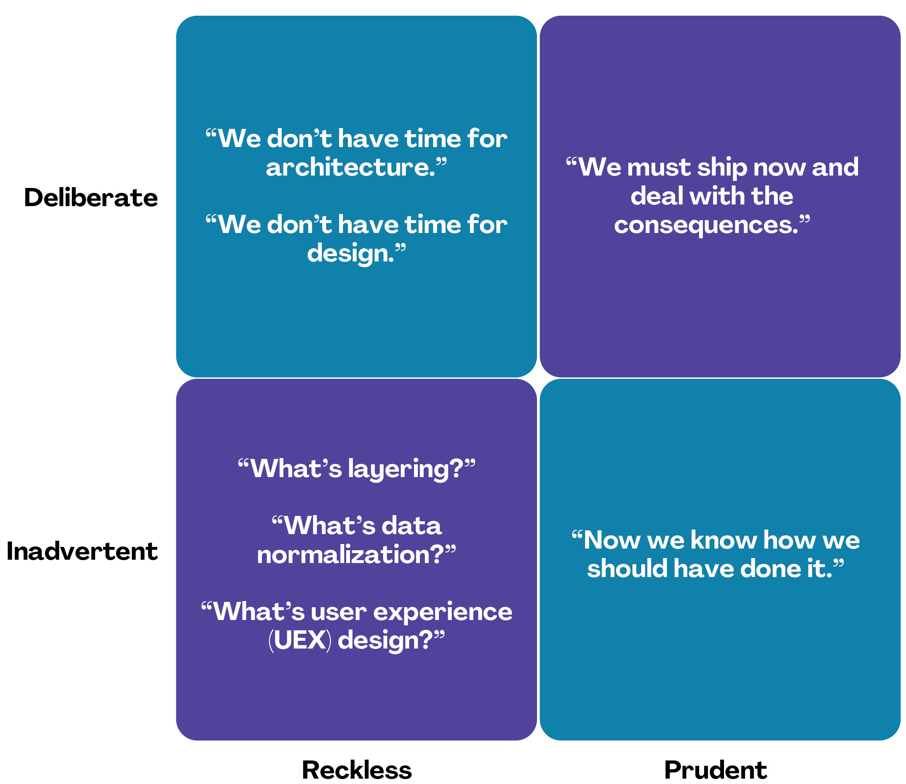

Ideas and concepts the developers of tangly open source components are following. It is a collection of articles about our journey through agile article development, digitalization, and software craftsmanship.
This is the multi-page printable view of this section. Click here to print.
Ideas and concepts the developers of tangly open source components are following. It is a collection of articles about our journey through agile article development, digitalization, and software craftsmanship.
You are applying the agile and lean approach to your software products development. Your teams use Scrum or Kanban to deliver running software at least every two weeks. The product launch is a tremendous success. You will likely sell the solution for the next ten years.
How shall you define and nurture the software architecture of your product and insure a long living and high-quality solution? The experts tell you the design is emergent. What does it mean?
There are 10 types of people: those who understand binary, and those who do not.
The Large-Scaled Scrum LeSS authors have written quite a few interesting statements about software design and architecture. Their opinionated observations are true for any software product. It is irrelevant if the product was developed using agile approaches or traditional older ones.
The sum of the source code is the true design blueprint or software architecture.
The real software architecture evolves (better or worse) every day of the product, as people are programming.
The real living architecture needs to be grown every day through acts of programming by master programmers.
A software architect who is not in touch with the evolving source code of the product is out of touch with reality.
Every programmer is some kind of architect — whether wanted or not. Every act of programming is some kind of architectural act — good or bad, small or large, intended or not.
Agile architecture comes from the behavior of agile architecting.
Hands-on master-programmer architects are key for resilient systems; avoid PowerPoint architects no writing any source code.
A culture of excellence in code and professionalism for the developers.
An emphasis on pair-programming coaching for high-quality code and design.
Agile modeling design workshops using collaborative peer approaches.
Test-driven development and refactoring [1] to continuously and aggressively remove technical debt.
And other hands-on-the-code and good practice behaviors.
These statements reflect the agile and modern approach to software design and architecture. The Open Group also recognized these changes and is trying to modernize enterprise architecture approaches and their de facto standard TOGAF.
Major agile companies such as Google, Twitter, Amazon, and Apple do not have a formal enterprise architecture organization. They delegate most of the decisions to senior development teams. Communities of practice are a tried and proven approach to align groups and disseminate knowledge.
You shall measure the adequacy and quality of your design and create software artifacts. Avoid opinions and collect empirical data. The scientific approach is key for professionalism.
Use the findings to improve through small experiments.[1]
Static analysis tools – validate your source code against good practice rules -,
Test driven development - validate your design with TDD -.
Acceptance test driven development - validate your functional requirements with ATDD -.
JBehave, tangly llc BDD
Fitness functions - validate your non-functional requirements automatically -.
Micro Profile, VisualVM, ELK
Pair programming – improve the produced artifacts through the wisdom of the crowd —.
No tools, it is a practice
Pair review and pull requests – validate your developers' work -.].
Bitbucket, Github, IntelliJ IDEA Git Pull Support.
The above validation activities shall always be backed through tools and integrated in your continuous delivery pipeline. Beware these tools can only detect non-quality and never provide a proof you achieved your expected quality. Qualified and experienced engineers are your best guaranty to achieve and sustain high quality in architecture and software products.
Implement the above measures to gather data and publish the actual state of your source code. You find more advanced approaches in Code Scene as Crime Scene, SonarLint for the Impatient, and Pragmatic Craftsmanship articles.
Read the LeSS architecture page for a comprehensive discussion of agile architecting.
A good architecture fulfills the functional and non-functional specifications and is easy to modify. It shall emerge during the development of releases and intentionally implement the known requirements. Your architects are talented developers and are full members of your Scrum teams.

The key for professional software development is good teams. Your development team members are
Expert in the used programming languages and technology stacks,
Understand object-oriented, functional and rule-based programming.
Known all major patterns and idioms of the used development stack.
Embrace continuous integration CI, continuous delivery CD, continuous development CD.
Automate everything and establish DevOps.
Study source code from open source projects to learn better ways.
hold weekly design workshops with huge whiteboards.
Use domain driven design [2, omain-driven-design-distilled, 4] and event storming.
Avoid BDUF.
You shall keep it simple, make it valuable, and build it piece by piece.
The above hints and practices shall empower your teams to practice successfully agile architecture and timely deliver delightful software solutions. Your organization shall train your collaborators, see also Shu Ha Ri model. Smart money goes in training your collaborators.
You are applying the agile and lean approach to your software product development. Your teams use Scrum or Kanban to deliver running software at least every two weeks.
To create an agile architecture, you must write worthy agile code. Agile code is always clean code. Never compromise on your key strategic asset, the source code of your product. Your source code and your data are strategic advantages for your company. Start early writing clean code, do it continuously and soon your code will be clean, legible and free of defects.
Be honest. Having a huge class with thousands of lines plainly demonstrates that your organization worked unprofessionally over months in the past. Such monsters are not born over a night coding session or a weekend hack session. It takes time and unwavering incompetence to create such maintenance nightmares.
And as long as your product contains such code monsters, it is worthless to pretend to have a nice and thought through architecture. Team discipline and early warning systems are the key to avoiding such blunders and killing the monster in the egg.
The clean code test driven development TDD approach to write code was defined last millennium. Professional developers adopted long ago this approach to deliver high quality, legible and maintainable code artifacts.
Always leave the code you are editing a little better than you found it.
Red - Write a test and run it, validating the test harness. I recommend acceptance tests and unit tests.
Green - Write the minimum amount of code to implement the functionality validated in the previously developed test. Update the code and run the tests until the test suite shows successful execution.
Refactor the code to reach clean code level. Use static analysis tools to achieve faster and better success.
Continuously run the tests for guaranty compliant changes. So you avoid any regression problem. Good practice is to integrate the test suite execution in a continuous integration pipeline.
If you are a Java developer, you will:
Use JUnit 5 and Mockito 2 to implement the first step. Evaluate AssertJ to write more legible conditions.
Use a powerful IDE such an IntelliJ IDEA to write and enhance functional code.
Use tools such as SonarLint, Jacoco, Spotbugs, ArchUnit to refactor your functional code and test cases.
Clean code applies to productive and test code.
The described approach has good practice since the beginning of this millennium.
|
JUnit 4 is obsolete. Stop writing unit tests with JUnit 4. Junit 5 was released in 2017 and provides modern features and is the official and undisputed successor of JUnit 4. |
All above mentioned tools are open source and free to use. Your organization has no excuse to write crap code.
Just write well engineered, legible and maintainable source code. It is a matter of discipline. It is also a prerequisite to agile architecture.
|
You as a developer have no excuse to write crap code. You are a professional developer, behave like one. |
Slaves are not allowed to say no. Laborers may be hesitant to say no. But professionals are expected to say no. Indeed, good managers crave someone who has the guts to say no. It’s the only way you can really get anything done.
How do you know what are the requirements of a specific feature? Either write a huge amount of outdated documentation or find a better way. The better way is acceptance test driven development ATDD.
For each feature, you need acceptance criteria; this approach is also called specification by example.
For each acceptance criteria write an acceptance test which is executed each time the application is updated in the continuous delivery pipeline. Therefore, the acceptance tests are the living documentation of the product behavior.
The cost of automating acceptance tests is so small in comparison to the cost of executing manual test plans that it makes no economic sense to write scripts for humans to execute.
To implement this approach, you need:
Acceptance criteria formulated for each functionality. It implies specifications by example – you need to train your business analysts and article owners.
Cucumber for Java (or equivalent tools) – to write acceptance tests.
Mock all external systems and the database – to have fast building and test time and avoid external dependencies.
A continuous build and delivery pipeline to automatically run your acceptance validation tests upon each application change,
Avoid user interface tests – because they are slow and brittle.
Use an in-memory database only if you have to – they are a fast solution to write acceptance tests but are intrinsically slower than mocks.
|
Never access file on the disk or use a database writing to a disk inside tests. This approach is way too slow and destroy fast continuous integration cycles. |
Any fool can write a code that a computer can understand. Good programmers write code that humans can understand.
Simple engineering practices are the most powerful ones. Practice consolidates changes in behavior of your development organization. Exercising new approaches enforces culture change and implicit modify the organization approaches.
Pair Programming - is a training on the job and crowd wisdom approach to steadily improving knowledge and quality. *TDD and ATDD - are safety net to guaranty quality attributes in your source code\.
DevOps starting with git, docker, continuous integration, delivery and deployment – to speed up development and eliminate tedious manual errors.
Lack of accountability equates to lack of trust. — your teams are accountable for the quality of your product, and you should trust them.
Culture change is often necessary. Autonomy and accountability are harsh mistresses.
What would happen if you allowed a bug to slip through a module, and it cost your company $10,000? The nonprofessional would shrug his shoulders, say “stuff happens,” and start writing the next module. The professional would write the company a check for $10,000!”
Once good practices are established, you can move to more sophisticated tools, such as git history code analysis – to uncover weaknesses in your development department.
Teams ready to learn from the like of Google could evaluate Trunk Based Development and consider long-lived branches as waste. An extensive description of the advantages can be found in the article branching patterns from Martin Fowler.
A code review can be done in different ways. Many teams use GitHub, Bitbucket or GitLab. A very common approach for code reviews is pull requests. However, there are situations where pull requests are not necessary. Different approaches are more cost-effective and have better cycle time.

For example, if a feature is implemented through pair programming or mob programming it is a fact that the code is already reviewed while it is written. We decided that it does not have to be reviewed again, but, of course, everybody may look at the commits later on in GitHub and add comments.
As a rule of thumb we agreed that every line of code has to be approved by at least one other developer before it is pushed into our master branch.
In trunk-based development it is different. Since we want to merge our commits into the master branch as quickly as possible, we cannot wait until the complete feature is finished. Unlike in the original trunk based development approach we still use feature branches, but we have much less divergence from the master branch than in Git Flow. We create a pull request as soon as the first commit is pushed into the feature branch. Of course that requires that no commit breaks anything or causes tests to fail. Remember that unfinished features can always be disabled with feature toggles.
Now, with part of the new feature committed and the pull request created, another developer from the team can review it. In most cases, that does not happen immediately because the developers don’t want to interrupt their work every time a team member pushes a commit. Instead, the code reviews are done when another developer is open for it. Meanwhile, the pull request might grow by a few commits.
The code is not always reviewed immediately after the commit but in most cases it reaches the master branch much quicker than in Git Flow.
You are applying the agile, lean approach to your software product development. Your teams use Scrum or Kanban to deliver running software every two weeks.
Agile architecture is a key element to improve the quality of your product and reduce cycle time of your application outcomes.
Your journey toward greater business agility starts by identifying what outcomes are most important to your company’s success. A key component is to find out how to create great architecture within the Scrum framework.
An agile architecture shall have four characteristics.
Allow change quickly - because we cannot foreseen the future -.
Always verifiable - because we want changes without impeding integrity -.
Support rapid development - because we want effective and efficient implementation of new features.
Always working - because we want continuous deployment to have customers' feedback - These characteristics are essential for successful agile development of great software products.
Scrum is silent how architecture shall be performed during sprints. We can use the Scrum values, the Scrum guide and the agile manifesto. Do not forget the agile manifesto twelve principles to infer how to apply agile architecture.
The architect shall be part of the Scrum development team. This is the most embedded way an architect would fit into a Scrum team. It may not even be an individual who has the title of an architect. The big idea behind Scrum teams is that team members have different skills. Their roles may change to deliver what is required for a particular sprint.
So it could be that senior developers within the team got architecture skills, or are in the best position, or have the best knowledge, to make those architectural decisions. Those team members with architectural skills are involved in the sprint on a day-to-day basis. They attend the daily Scrum meetings, take items off the backlog, and work on them.
Interestingly LeSS is more opinionated and describe successful approaches for agile architecture and design.
Scrum is silent about technical practices. The Scrum fathers and community strongly emphasize adopting eXtreme Programming practices. For bigger systems, use the good practices described in LeSS.
An actual very good practice is to use event storming and domain driven design to model the application domain and partition the system.
Use fitness functions to monitor and validate continuously all non-functional requirements.
The well-established practices from the object-oriented and DevOps communities are
Develop very early a working skeleton.
Clean architecture implies clean code and requires clean coders in your team (see our post-clean code).
Aggressive refactoring and understand technical debt.
Continuous integration, continuous delivery, and continuous deployment.
For a detailed discussion, consult the post :link../../blog/2018/pragmatic-craftsmanship-professional-software-developer/[Pragmatic Craftsmanship].
The architect shall
Be part of the team, work daily with team members and attend all team events.
Maintain the pace of development.
Often and early communicate as a coach and mentor – we mean pair programming and design sessions -.
Be fluent in the domain driven development, hexagonal architecture, refactoring, and clean code.
Use architecture design record ADR and light documentation to describe architecture decisions - meaning no lengthy Software Architecture Document SAD or overwhelming UML models -.
Be a master programmer and writes code in the application technological stack. He writes actual source code as current good practices are.
Have rich knowledge of architecture and design.
Engineering is the application of an empirical scientific approach to finding efficient solutions to practical problems.
We have mentioned refactoring, which is how we evolve an ever-improving design and architecture while building the product incrementally. To do that, we need to know the difference between good architecture and design and not-so-good. We need a rich pool of architecture and design options in our bag of tricks, ranging from very simple options to the more complex and rich options that we may need as the system grows. One never knows too much about the quality of architecture, code, and design. One does, of course, need to apply that knowledge smoothly, incrementally, little by little.
You are responsible to create or modify a component in your current application. This is a design activity.
How can you create a good, legible, maintainable component architecture? How can you validate your functional and non-functional requirements?
Yes, you are right. You are responsible for architecture decisions at component or subsystem level. Below a set of tools to improve the quality of your design.
The pattern movement was started last millennium. Very talented and experienced developers have documented how to solve common problems elegantly and effectively. Depending on the programming language, you are using different idioms are preferred. The way to solve the same problem is different in Java, Scala, C++, Python or C#.
You should know all regular structural, behavioral and creational patterns. Explore your programming language and discover how idioms and patterns have evolved between major releases. For example, lambda expressions and streams introduced in Java 8 - released Spring 2014 - completely transform the solution for regular business logic. Records introduced in Java 14 - released Spring 2020 - have a huge impact how your architecture deals with data transfer objects – DTO – and immutability.
Stop inventing the wheel again and again. Avoid Not Invented Here NIH syndrome. Your current problem was already solved multiple times. Explore open source solutions, read posts, study books. elect the most adequate solution and fill free to improve it.
Instead of searching for a solution for days, post your question on an adequate forum or on Stack Overflow. Again fill free to improve the suggested solutions.
Become more efficient and use the wisdom of all these developers accessible through the Internet. Always verify the quality and adequacy of their proposed solution.
Know your programming language and the huge associated standard libraries part of your technology stack. Wisdom is coded in this code. Standard patterns are implemented in almost all packages. Idioms are encoded everywhere.
See how Java deals with human and machine time with java.time package. Decades of trials and errors were needed to finally create a balanced and simple to use time abstractions. All these decisions and learnings are encoded in this code.
You want to create a clean and resilient architecture you are proud of.

You must first write clean code. Clean architecture build up on clean code. Promote, support, teach clean code in your agile team. Agile code is clean code.
Do not fall to the fallacy to draw beautiful and useless UML diagram and write thick software architecture documents. The real architecture is hidden in the source code of your article.
You still document all major design decisions and should use UML to enlighten important architecture decisions.
If you are developing in Java, you should use the current features of the programming language. You use Java 14 for example:
Try with resources and closeable resources
Immutable collections
Streams, optionals, filters, and collectors
Predicates and functions to define lambda expressions
Records and immutability for objects
Pattern matching syntactic sugar as for instanceof operator
Switch expressions
Text strings
Recognize technical refactoring is necessary to integrate new concepts and approaches. Development stacks such as Java, Java Script/Type Script or .NET C# introduce every year new constructs. They simplify code, reduce boilerplate or solve elegantly known design problems. A good example is the support of immutable objects at language level.
The entropy of the source code increases over time. Only continuous and aggressive refactoring mitigates the degenerescence of your application. Study the refactoring catalog and apply daily to your source code. Each time you correct an error or add a new functionality refactor your code. Remove smells, compiler warnings and migrate older code to use newer and better features of your programming language.
Your users want a working application. Write acceptance tests insuring all relevant functions are tested through your continuous integration pipeline. Therefore you guarantee your users the application behaves as specified.
Testability and changeability of your application are architectural aspects. You must have a way to verify these non-functional requirements. Test driven development is a proven approach to fulfill these requirements and validate them continuously.
Continuous integration and delivery are the mechanisms to continuously validate and verify all functional and non-functional requirements are correctly implemented. You guarantee your users and customers that any software delivery they get is compliant and correct.
Each time you find a discrepancy add an additional test validating the requirement behind this fault. Therefore the same error will never happen again.
Publish your components on a central repository such as Maven Central. Your users have easy and standardized access to your components and their latest version. Build tools such as Gradle and Maven or IDE such as IntelliJ IDEA fetch transparently the components.
Javadoc is the standard and hugely helpful approach to document classes and component public interfaces in Java. Similar tools exist for other programming languages.
Architecture design records provide hints why specific design decisions were chosen. Your users can better understand the path you follow and the selected tradeoffs. They do not have to agree, but they can understand the arguments why you choose so.
Static code generator is an actual good practice to provide the current documentation and tutorials for your components. We write all our documentation in the asciidoc format - including plantUML and highlighted source code - and generate our website using hugo tool suite.
Start small and improve your approach every day.
 With refactoring you can take a bad design, even chaos software, and rework it into well-designed code. Most often it is cheaper refactoring a legacy application instead of rewriting it from scratch.
Each refactoring step is simple, even simplistic. Yet the cumulative effect of these small changes can radically improve the design.
For a developer new to a legacy software article, it is often hard to understand the existing application, determine the extent of source code and architectural decay, and identify smells and metric violations.
Legacy applications are often critical to the business and have been in use for years, sometimes decades. Since the business is evolving, there is constant pressure to support additional requirements. However, changing these applications is difficult. You end up spending an increasing number of resources maintaining the software.
Most dependencies in software development are not physical but knowledge-related and can be eliminated through broadening people’s knowledge.
There are many reasons why maintaining legacy software is a difficult problem. Often, most, if not all, of the original developers are gone, and no one understands how the application is implemented. The technologies used in the application are no longer current, having been replaced by newer and more exciting technologies. Also, software complexity increases as it evolves over time as you add new requirements.
The key to managing the lifecycle of software is to continuously work as a professional and skilled developer. A professional engineer opportunistically refactor each time he modifies source code.
Understand how it is used. These scenarios are the acceptance tests you need to start creating a set of automated validation criteria. And you will better understand how your users are working with your article.
Understand how it is deployed. You need a reproducible and in the long run automated process to deploy a new version of your article.
Understand how it is build. You need a reproducible and automated building process. This process must be integrated into a continuous integration and delivery pipeline.
Understand how it is structured. You need a tentative architecture description to start refactoring and to untangle this big ball of mud into a more modular solution.
Refactoring is always a successful activity. You cannot fail. But you need discipline, continuous involvement, and measurement.

If you are new to refactoring it is worth having a coach to smooth the learning curve.
Extract one big service, refactor, test, and deploy. Iterate. If you are not successful, discard your failure and checkout the working version of git. You should have learnt enough so that the next try will be successful.
Refactor code. Use static analysis tools to detect the flaws in your source code. You should only improve live code, meaning code you must correct or extend. See Agile Code is Clean Code. Use a modern IDE to automate the smaller refactoring steps, and avoid spurious errors.
Resolve design issues. Your senior design specialists already know them.
Increase code coverage. Code coverage is the security net when you are refactoring code.
Slowly add fitness functions to continuously validate your non-functional requirements.
Beware of good practices how to write good software products and refactor successfully applications
Move to Domain Driven Design as an architecture approach. It works either for micro architecture or for modular monolith approaches.
Master long live domain driven design and event storming
Master your technical stack and use current tools and libraries
Modularize one big service extraction one after the other
Avoid using dead architectural techniques. TOGAF, UML, PMI, CMMI are obsolete - various activities they recommend are good, do them in your sprints.
Avoid lengthy, slow and expensive review approach. ATAM is dead.
The quality tree technique is superb, use fitness functions to implement your quality tree.
If you are running legacy technology, this not only becomes a threat to your business but also to your hiring and employer branding efforts. As fewer and fewer programmers and operation managers will have the knowledge of those systems, you’ll face a dwindling talent pool.
Applications do not degrade to legacy or geriatric systems overnight. The organization and development group failed to work professionally over years before the article is doomed.
You must establish a culture of professional software development. Professional software developers write code which is maintainable and legible. Only unprofessional organizations create legacy applications.
Embrace software craftsmanship. All your developers should have formal training and regular training in new approaches and techniques. They read regularly books. Is it not that you expect from your physician or the pilot of the plane you are taking?
Most products are developed by a team, and these achievements are the fruit of teamwork.
Software article development is now agile, and most often uses the Scrum approach.
Just putting a bunch of people together will not produce a high-performance agile team. Quite a few companies find that out the hard way.
How can you increase the odds to create an environment where agile teams bloom and perform?
Your business is nothing more than the collective energy and efforts of the people working with and for you. If you want to make your business better, invest in your people. They’ll get the job done.
Learn and pass on development good practices through pair programming and coding dojos. Promote communities of practice.
It is not enough that management commit themselves to quality and productivity. They must know what it is they must do. Such a responsibility cannot be delegated — W. Edwards Deming
You have hired good people. Train them to improve and perform better.
CFO to CEO: “What happens if we invest in developing our people and they leave us?”
CEO to CFO: “What happens if we don’t, and they stay?”
Secure collective knowledge of the code through code reviews, by pair or collectively. Avoid any developer working on his own on a specific piece of code. Encourage your collaborators to write blogs and ask questions in forums such as Stack Overflow.
Establish together development standards and keep them up to date. Nurture these good practices through communities of practice.
Rely on tools such as continuous integration, static metrics and architecture fitness functions to shorten the feedback loop. See our post about pragmatic software craftsmanship.
Establish a culture to use current versions of programming languages, tools and libraries.
For instance, on a previous product, we had planned a coding dojo ritual once every two weeks, during which we shared our practices with some perspective over the product. It was an occasion to experiment new technologies, assess their match for the product needs, share new coding techniques, and update our standards together.
I am not a great programmer; I am just a good programmer with great habits.
Professional software developers should have formal training in software development. You should expect from a person working forty hours a week for the next forty years to pursue a bachelor or a master in computer science.
You should expect regular certifications in the used technology stacks or development approaches. A Scrum master two days training does not make somebody an expert; but a specialist refusing to invest in a two-day training is probably not a member you want in a high performing team.
A professional engineer should read multiple technical books every year.
Leaders shall create psychological safety in the workplace. And please Walk the Talk.
Low levels of psychological safety can create a culture of silence. They can also create a Cassandra culture – an environment in which speaking up is belittled and warnings go unheeded.
The major responsibility of senior management is
Hire and on-board collaborators
Nurture, retain and develop collaborators
Respectfully off-board departing collaborators
Move collaborators to the learning zone and let them thrive.
Nurture a culture of learning through training on the job, learning from external sources - such as reading high-quality blogs – and formal education - such as bachelor or master courses, for example, agile architecture -. Learning means trying and failing. Your culture should embrace small-scale failure to accelerate learning.
Please reflect how you encourage continuous learning in your organization. Consider the following statements:
Is training always an investment and never a cost point?
Do you budget and account training activities over the year?
Do you consistently reach your learning goals?
Are they really investment positions in your budget?
The last months I was often confronted with software products having insufficient quality.
Insufficient means late delivery, and few new features but quite a few errors. The effort to correct errors in the field eats away 30% to 50% from the whole development budget. How can such a dreadful situation occur?
One root cause is the low quality of the source code and ignorance of basic coding design approaches. We are not talking about complex design activities or complex patterns; we are discussing basic approaches how to write correct and maintainable code.
Most of the programmers have no formal training in the technology stack they are using daily. Their best friend is the Internet. Copy and paste from Stackoverflow is a saver. And therefore, many agile projects are now, steadily and iteratively producing mediocre software.
You shall be a proud software craftsman. You shall work as a professional and deliver professional results. I recommend any Java developer to
Have formal training in the Java language and library. For example, you should consider a Java Programmer certification for the current JDK you are working daily with.
Learn the new features in Java e.g. Streams, Lambdas, Reactive Programming, LocalDate, Modules, packaging with jlink.
Read and understand Effective Java [5] from Joshua Bloch.
Read and understand Clean Code [6], Clean Coder [7], Clean Architecture [8], Clean Agile [9],
Read and understand Refactoring [1] from Martin Fowler, And read Refactoring not on the backlog post from Ron Jeffries.
Learn modern practices such as logging with slf4j, TDD with JUnit5, Mockito and AssertJ, ATDD with Cucumber, Lean DevOps. continuous integration, continuous delivery, continuous deployment, monitoring.
Be aware of famous Java libraries such as Guava, Apache Commons, Use SonarQube - and the SonarLint plugin for your preferred IDE – to catch well-known weaknesses in your source code and improve your coding skills.
A software developer not knowing the above items is almost certainly not a professional person, just a more or less talented amateur. See the blog of Mike Cohn, the difference between a professional and an amateur for a similar point of view.
You can find a more extensive list of books on tangly llc website
|
You shall strive for mastery. The feeling you reached mastery level is truly awesome. |
Read a technical book each quarter,
Learn a new language or framework every two years.
Read books such as The Software Craftsman [10], Refactoring [1], Agile Code [6], Agile Coder [7] Clean Architecture [8], Clean Agile [9]
Know approaches such eXtreme Programming.
Work with Scrum, Kanban, LeSS - Agile approaches are definitively state of the industry techniques -.
Master container approaches with Docker - containers are here to stay and will replace virtual machines -.
Technical leaders teach during coding dojos and pair programming sessions.
You shall write good enough software without errors and using best practices of the industry. If not consider changing your profession. See my blog post about technical debt discussing the consequences of missing mastery.
Software craftsmanship is an initiative to improve the professionalism of software developers. You do not have to agree with them, just look what they are doing. For a detailed discussion read for example the book The Software Craftsman: Professionalism, Pragmatism, Pride by Sandro Mancuso [10].
Don’t discuss practices, discuss value.
Their manifesto is
Craftsmanship is not enough to guarantee the success of a product, but the lack of it can be the main cause of its failure.
Agile and Craftsmanship complement each other and both are necessary.
Agile processes assumes technical excellence and a professional attitude.
Software craftsmanship takes technical excellence and professionalism to a whole new level.
Take everything you read with a grain of salt.
Software craftsmanship
Is not a church, trying to convert all developers.
Is about leading by example and showing how we can be better.
Is about well-written and designed code - and the customer stays in the center -.
Is about continuously delivering value not writing crap code.
Your goal shall to become a professional developer and reach mastery. How you do it is up to you.
[1] M. Fowler, Refactoring, Second. Addision-Wesley, 2018 [Online]. Available: https://www.amazon.com/dp/0134757599
[2] E. Evans, Domain-driven design. Addison-Wesley, 2004 [Online]. Available: https://www.amazon.com/dp/0321125215
[4] V. Vernon, Implementing Domain driven Design. Addison-Wesley Professional, 2012 [Online]. Available: https://www.amazon.com/dp/B00BCLEBN8
[5] J. Bloch, Effective Java, Third. Addison-Wesley Professional, 2017 [Online]. Available: https://www.amazon.com/dp/B078H61SCH
[6] R. C. Martin, Clean Code. Prentice Hall, 2009 [Online]. Available: https://www.amazon.com/dp/0132350882
[7] R. C. Martin, The Clean Coder. Prentice Hall, 2011 [Online]. Available: https://www.amazon.com/dp/0137081073
[8] R. C. Martin, Clean Architecture. Pearson, 2017 [Online]. Available: https://www.amazon.com/dp/0134494164
[9] R. C. Martin, Clean Agile. Prentice Hall, 2020 [Online]. Available: https://www.amazon.com/dp/0135781868
[10] S. Mancuso, The Software Craftsman. Prentice Hall, 2015 [Online]. Available: https://www.amazon.com/dp/0134052501
! IDEA: one mindmap per theme and specific text
DevOps — Gradle --- Central dependencies management --- Project plugin — CI — CD BitBucket (GitHub, GitLab) — CD Heroku
Current JDK
IntelliJ IDEA IDE — Vulnerabilities Detection
Documentation — JavaDoc — Diagrams as Code --- plantUML [plantuml,diagram-name,svg,svg-type="interactive"] — Code Snippets — Integration Tests — Hugo Docsy
Solutions — Vaadin --- Vaadin session is 10 MB, 1000 parallel users are 10 GB — Standalone Application — Micro Stream
The event field is one of the following values
any entity imported from an external source is audited
any entity exported to an external source is audited
each time a file is generated and exported shall be audited. For example, the creation of an invoice document is audited.
login of a user
logout of a user
The component field has the structure net.tangly.component_name. The component field is the Java module name of the design component.
All import and export operations should be audited. An import happens each time the system reads data from an external system. An export happens each time the system sends data to an external system.
All imported
Use modern Java constructs in our daily coding
Prefer a record over a class abstraction to promote immutable objects.
Prefer stream approach over explicit control statements to promote functional programming.
Promote modules for information hiding and reducing coupling between components.
Experiment with var construct to find out if code is more legible.
The method implementation uses a String.format() approach. We assume that Java will introduce intrinsic support for an efficient implementation of toString method based on String.format(). As soon as the intrinsics is available, we will migrate to the supported version as stated in JEP 348.
The toString method is used to create detailed audit and logging messages and support production error searching. The format of the message is based on the build-in format defined in the JDK for Java records.
@Override
public String toString() {
return String.format("created=%s, author=%s, text=%s, tags=%s", created(), author(), text(), Tag.text(tags));
}The extended instanceof operator allows a compact and legible definition of the equality method. The whole method body is written as one statement.
@Override
public boolean equals(Object obj) {
return (obj instanceof Comment o) && Objects.equals(created(), o.created()) && Objects.equals(author(), o.author()) &&
Objects.equals(text(), o.text()) && Objects.equals(tags(), o.tags());
}Use plantUML to document all design decisions with diagrams. Diagrams shall be defined to explain specific aspects of a component. Do not try to model the whole source code.
-:sectnums: :toc:
Push the changes to the Bitbucket repository
Verify the build job in the CI pipeline was successful
Push the changes to the GitHub repository. The statistics for developer activities will be automatically updated.
The following process is used to publish tangly open source component on Maven Central.
Publish artifacts of a component with the script uploadToMavenCentral.sh.
Do not use the gradle task gradle publishAllPublicationsToMavenRepository -Pmode=prod.
Sonatype cannot handle a parallel upload of multiple components and simply close the connections during upload (Status 2020-Q2).
Pre activity: test publishing with gradle publishToMavenLocal
Pre activity: check on bitbucket the product compiles through the CI continuous integration pipeline
Post activity: tag repository on git to identify the version of the published packages. The tag version semantic part must be the same as the package version on Maven Central The tag is of the form -{AcronymComponent}-MajorVersion-MinorVersion-PatchVersion-
Verify with git tag label and git push origin --tags
Log into Sonatype Maven Central Repository
Go to Staging Repositories
Find your temporary repository at the end of the list
Review the content of the repository
Close the repository -button on tool list-
Close stage is initiated and checks are performed. If everything was fine, the content was published.
Release the artifact -button on the tool list-
See Static Website Publication to update the website
|
It takes up to one day until the component is visible in Maven Central website upon publication. On the positive side, the last publications were performed in less than 30 minutes. |
Below the dependencies between tangly open source components as defined in the multi-modules Gradle Build Tool build file.

The synchronization is performed with the command
git push --prune https://github.com/marcelbaumann/tangly-os.git +refs/remotes/origin/*:refs/heads/* +refs/tags/*:refs/tags/* (1)
git remote (2)
git push origin-bitbucket (3)| 1 | Pushes the repository with all remotes, references and tags to GitHub specified repository |
| 2 | List all remotes associated with this git repository |
| 3 | Pushes the master branch to the origin-bitbucket remote repository. The push shall trigger the continuous integration pipeline |
You must create a token for developer account to be able to push changes and trigger the CI pipeline. The username is your account username The password is the generated token [2]. Store it in a safe place.
We needed to manually publish the public key on keys.gnupg.net
Gradle build file has a condition including disabling the signing plugin on the CI pipeline because keys and associated authentication are not available. I decided not to upload private keys to bitbucket. See the documentation at the beginning of the Gradle build file for details.
| Set the property if you want to sign the component artifacts and publish to Maven Central. |
The static website uses Asciidoc to write all documents.
The new version of the Hugo support configuration of Asciidoctor through config.toml therefore no manipulation of asciidoctor is needed. As a bonus, the files generated by PlantUml are created in the correct folder. We still need to install the referenced packages.
sudo gem install asciidoctor-diagram (1)
sudo gem install asciidoctor-bibtex (2)
sudo gem install asciimath (3)| 1 | Provides support for all diagrams such as plantUML and mermaid. |
| 2 | Provides support for formal bibliography references. |
| 3 | Provides support for mathematical and logical expressions in documents. |
The docsy theme is missing some features. It does not support asciidoc styling or commenting blogs. Our extensions follow the official rules how a theme can be tailored and expended.
The major changes are:
Inclusion of the styling sheet asciidoctor.scss to style asciidoc documents [3].
Inclusion of the shortcodes extension shortcodes.html layouts and the style file shortcodes.scss to support file attachments in the website [4].
Extesnsion of the blog section with comments-uttereances.html to support comments on blog articles [5].
Changes in the header and footer partials to display mathematical expressions and well-styled copyright [6].
All chagnes are defined in the assets and layouts folders as part of our website content. Hugo algorithms select local overwritten files and ignore the corresponding theme files.\
|
The current structure of our extensions follow the official approach how a Hugo module should be extended. We do not change any files in the theme. All changes are defined locally. We use the selection algorithm of Hugo to activate our tailoring and extensions. |
The tangly open source components website is hosted under Documentation.
Read the instructions in the asciidoctor script file under the scripts' folder. Four scripts are provided to generate the Hugo static site with associated structure and theme.
the script initiateHugo.sh creates the layout of the site and retrieve the theme.
the script populateHugo.sh populates the site with our content.
Upon completion of local development, you must start a local Hugo server and generate the indexing files for lunr search. Before uploading the site stop the Hugo local server.
the script completeHugo.sh generates the static pictures and copies them to the static folder and publish the whole site on bitbucket.
Upon completion, the site is published on the web for all.
Install regular Java JDK such as the Oracle or OpenJDK distribution. They will be located under /Library/Java/JavaVirtualMachines.
If using bash shell, add following commands to your .bash_profile.
alias java11 = "export JAVA_HOME=`/usr/libexec/java_home -v 11`; java -version"
alias java17 = "export JAVA_HOME=`/usr/libexec/java_home -v 17`; java -version"
alias java18 = "export JAVA_HOME=`/usr/libexec/java_home -v 18`; java -version"
alias java19 = "export JAVA_HOME=`/usr/libexec/java_home -v 19`; java -version"You can set the exact version such as 17.0.1 to precisely select a JDK or set an overall version such as 17 to select a generic version.
After restarting your terminal the command java17 will set JDK 17 to default JDK (if installed on your macOS).
The list of JDK can be found with
/usr/libexec/java_home -VGenerate the ERP application as a production release.
gradle install -DproductionMode=true (1)
gradle install -Pproduction
unzip ./build/distributions/net.tangly.erp.ui-<version>.zip (2)
docker build -t erp-docker . (3)
docker run -ti -p 8080:8080 erp-docker (4)| 1 | Generates a production distribution stored under ./build/distributions |
| 2 | Unzip the packed distribution because the docker base image does not contain unzip utility |
| 3 | Build the docker image named erp-docker |
| 4 | Run the docker image erp-docker and map the image port to 8080 |
- === Introduction
To be written
[1] The power of Tags and Comments. Marcel Baumann. 2020
[1] Reference Codes. Marcel Baumann. 2020
[1] Meaningful Identifiers. Marcel Baumann. 2021
[1] Identifiers and Names. Marcel Baumann. 2020
- === Purpose
Agile development teams shall manage and diminish their technical debt. We provide instruments to increase the pay-off of refactoring measures. The most relevant source code parts should be refactored first. But how can we identify them?
Git is the de facto standard for version management systems. Git contains the whole evolution story of our source code. We use these data to identify areas under repetitive change or often needing fixing. In parallel, the evolution of the source code hints us for complexity hotspots.
The three areas of statistical data are combined to identify the most promising area for refactoring. * History of commits reflecting the behavior and priorities of team members over time * Evolution of source code artifacts reflecting changes in complexity and legibility * Corrections of identified defects and their location identify non-quality hotspots
The provided tools extract the requested indicators and present them graphically. The findings are used to support refactoring prioritization.
Gather changes in the repository artifacts over a specified time interval
the gathered data are date of change, the author of change, number of added lines and of removed lines
each file change is gathered
only the version management system git is supported
Gather complexity metrics over source code artifacts – classes and packages – over a specified time interval
Gather location and time when identified defects were fixed in the source code repository
use the official conventions to identify a closed ticket in a commit comment

The [Architecture Design Records]https://en.wikipedia.org/wiki/Architectural_decision ADR for the overall open source products of tangly.
These design decisions often define how we want to develop applications in Modern Java.
Date: 2018-02-20
Implemented

Guava is an historical effort to provide much-needed functionalities to the Java community. The Java ecosystem evolves quite slowly at the beginning of the millennium. Later stewardship clearly improved with a six-month release schedule approach. Preview and incubator initiatives allowed timely evaluation of new features and idioms in the Java language and ecosystem.
JDK versions from release 8 often provide better replacement methods for a lot of Guava functions. New JDKs are released every six months and provide regular improvements to the API. These improvements make Guava functions more and more obsolete.
Guava is an external library of high quality but still an additional dependency in the application. We always follow the rule to use language and standard library constructs over using external libraries. Guava tries to support older JDKs and, therefore does not use more modern approaches defined in new API versions. We consider Guava has a legacy library. We are dedicated to writing modern Java using the latest official releases of the language and runtime environment.
The advantage is better integration, always synchronized with a new release of the JDK and no incompatibilities. The drawback is sometimes a slightly more cumbersome syntax or solution. [1].
All Guava usages shall be replaced by JDK standard functions. The main advantages are:
Current JDK versions provide their own implementation e.g., in the Objects class.
Guava dependency is removed from our source code and compiled artifacts.
Guava is not optimized for idioms used in current JDK such as streams and extensive use of lambdas. Guava needs years to support new concepts such as algebraic data types.
|
This decision is against good practices documented in the first decade of this millennium. The Guava library did not evolve as rapidly as the new Java versions released in the second and third decades. We strongly advocate timely evolution. Try to avoid becoming laggards in your technology stack. As a rule, use the current Java release, or as a minimal version, the latest long-term supported version of Java. |
Some operations are more complicated to implement because a solution is already provided in Guava.
We have the huge advantage of being able to use the current approaches provided in JDK and associated standard API.
Code uses the current constructs provided through last released JDK.
Date: 2020-06-15
Implemented

Some libraries need to create files on a file system. For example, you want to generate human-readable paper invoices.
We recommend the following conventions when writing unit tests creating files.
Use Google Java in memory file system Jimfs.
Additional file systems can only be used in Java if all operations are performed through Path objects.
Path objects have a reference to the file system; File objects always referenced the default file system.
When you are writing to the default file system use the root directory /tmp/ available in all Unix like operating systems.
|
Avoid writing files to a local file system. This approach is slow, cumbersome and error-prone. Use in-memory file systems. |
We have a dependency on an open source product currently managed by Google.
Use of Jimfs requires use of Path instances. We shall remove all references to File instances. File instances do not support alternative file systems. Therefore, we shall use libraries providing a workaround File instances either by using Path instances or reader and writer to access files.
Operations to the physical file system have the risk that rights problems could rise in some continuous integration environment.
Date: 2020-01-01
Implemented

JDK is released every six months to all Java developers. The latest approach is to release a long-term supported version every two years.
Better approaches support clean code, less verbose source code and reduce programming [5] [2]. These constructs shall be used in our modules as soon as they are released to the developers.
The advantage is better integration, always synchronized with the current release of the JDK and no incompatibilities. The drawback is that our clients have to use the current JDK released version.
The major advantage is that you are using the latest version you do not need to pay license fees for each server you have running. Older Oracle versions always require a support contract and associated fees. The other approach is to use an alternate distribution such as OpenJDK.
We use the current released JDK and all constructs provided in this JDK [1]. We use preview features and incubating functionality present in this JDK. The main advantages are
JDK 18 and 19 give improvements in pattern matching and thread programming.
Clients are forced to use the current JDK version.
Tooling is more brittle because a lot of tool maintainers are late to adapt the actual version of JDK.
The instanceof operator supports in conditional statement deconstruction.
The record construct simplifies data objects and encourages immutability.
The UncheckedIOException encourages the use of non-checked exceptions.
Date: 2020-01-01
Implemented

A legible, well-structured and up-to-date technical documentation of released open source components is a service to all our users. Due to the small size of our team, we want a straight forward tool chain to generate the website. In the future, we could move our product to another hosting platform. The solution should be built on a standard to minimize porting overhead.
I am personally a fan of Asciidoc and would promote a solution supporting this markup language. I will strongly fight against proprietary solutions.
Committers are forced to document in Asciidoc.
Tooling is slightly more brittle because Asciidoctor integration in Hugo is work in progress. Asciidoctor is also undergoing changes such as the native support of rouge syntax highlighter. The improvements in both tools were impressive the last year, but we have to update regularly our toolchain and update all Asciidoc documents.
(ref-hugo) themes styling for AsciiDoc is sketchy. The visual quality is currently hindered due to faulty support of the standard or custom AsciiDoc stylesheet.
AsciiDoc supports native rouge code highlighting module. All source code fragments are nicely displayed without special support from Hugo.
Date: 2019-05-01
Implemented
Supersede: FSM-0002

The tangly open source libraries are mature enough to be used in public commercial and academic projects.
The libraries were used in internal projects and refined to fulfill these requirements. More customers will validate the usefulness of the library and identify extensions for further releases.
We want to provide a standard and well-known approach for our customers. They shall have access to our libraries through official and well-documented channels.
The libraries shall be published as artifacts on maven central and be accessible to a wide range of developers and organizations. A website shall be set up to provide an adequate documentation for users.
The Technical Documentation will use a static web approach to minimize costs and provide good legibility. All open source components will be hosted on the same site.
The libraries will be published on Maven Central to maximize potential usage.
We have to establish a publishing process at the company level to deploy signed artifacts to maven central repository. See release and publication process.
We have to establish a public website to host the documentation of public-published libraries. The static website is Open Source Components
We have to support semantic versioning for all future releases of public-published libraries. See release and publication process.
Date: 2018-02-20
Implemented

The modules provided as tangly open source components are used in more complex applications.
These applications often use dependency injection frameworks to construct and initialize their instances. Dependency injection is a technique in which an object receives other objects that it depends on, called dependencies.
Typically, the receiving object is called a client. The passed-in injected object is called a service. The code that passes the service to the client is called the injector.
Instead of the client specifying that service it will use, the injector tells the client what service should be used. The injection refers to the passing of a dependency into the client that uses it.
Guice is selected as a dependency injection framework.
Guice is one of the industrial standards with Dagger and Sprint DI.
Guice supports JDK standard @inject annotation used in other dependency frameworks.
Guice supports the definition of modules to describe dependencies. The modules are also used as a documentation mechanism.
Care will be taken to allow users to use a different dependency injection framework.
A dependency injection module shall be provided for each relevant module.
Constructor injection is the preferred mechanism. In the long term, it should be the only approach.
Please avoid field injection as an injection approach.
Date: 2020-11-13
Implemented

The modules provided as tangly open source components are used in more complex applications. These applications require a reliable and performant persistence approach for their data.
In Java, everything is an object. In contrast, all databases come with their own specific data structure that is incompatible with Java objects.
This is called impedance mismatch.
As a consequence, a mapping is required, which means all data must be converted behind the scenes. Conversions are inefficient, lead to enormous loss of performance and latencies, and are linked to further serious disadvantages.
MicroStream was selected as persistence approach for the first versions of the ERP solution.
Almost no impedance mismatch between the Java application and persistence store.
An elegant approach to provide one persistence container for each bounded domain the same application.
MicroStream has formally announced their software library will be published under an open source license.
The library supports current versions of the JDK and all constructs of the language including preview constructs.
The support of the company is good. The answers are fast and professional.
Care will be taken to provide a fallback to another persistence solution if performance or licensing problems occur.
A huge advantage is the ease of migrating a java model from Microstream to JPA. Experience shows that the effort is often less than five working days [1].
Knowledge in MicroStream library [1] must be build-up.
Software design must be slightly adapted to the MicroStream approach.
A clear separation of data from functions is required.
Lambdas cannot currently be persisted. Therefore, all data containers with lambda variables must either be redesigned or declared as transient.
Work on a design enabling domain driven design with MicroStream approach.
The MicroStream approach supports a very effective way to persist data. The effort to define storage and map Java objects to a persistent representation are minimal. This approach minimizes the costs for this functionality without impeding the quality or completeness of the solution.
Realm shall have a private data class to store all data to be persisted.
The application must generate unique object identifiers. MicroStream does not provide functions in this area.
Use specialized features of the library to implement Modern Java Constructs ADR.
[1] MicroStream 4.x
Date: 2021-06-15
Implemented

The logging library slf4j seems to be a dead project for at least one year. The last commit in the GitHub slf4j repository was performed two years ago. Version 2.0 of the library is an alpha release on Maven Central dating back to October 2019.
The apache project log4j has made tremendous progress with the creation of the log4j2 library. All features provided in slf4j are now available in log4j2. In particular, the fluent interface, which is only available in the beta version of slf4j is also supported. Additional features are also provided and performance is better than with other logging frameworks.
The project is active and under the umbrella of the Apache Foundation. The library uses well-documented Java module names as any modern library shall provide.
This situation raises the question to move our application to the apache logging framework. Both APIs are very similar in style and naming. The effort to migrate is quite reasonable. Usually, only the logger declaration needs a modification. The creation of logging records uses exactly the same syntax and calling conventions.
The advantage is better integration with an actively supported and developed library.
All components will be migrated to the log4j2 library [1].
All components shall use the fluent interface to write logging records. This decision shall increase the legibility of the source code.
Staying in a library no more under active development is too dangerous. Closing of security issues and support of current JDK versions are not guaranteed.
All source files must be modified to use the new library
All logging record creations shall use a fluent interface. As in slf4j, no string concatenation shall happen in log record calls, use the message feature of the library.
Logging level is specified by using the fluent interface
No conditional statements shall be used to bracket logging statements
Exceptions are always stated through the fluent user interface and are not an argument of the log message
All Gradle build files shall use the new library. The API is declared as an implementation dependency. The core library is declared as a test or runtime dependency.
Testing shall be performed to verify correct behavior and correct configuration.
We shall explore if trouble arise from used components which are using other logging libraries. The risk is small because it is already existing wehn using slf4j liberary. The difference is only our new preferred library is now the Apache one.
The architecture of log4j2 is described in Log4j2 Main Components.
The log4j2 community reacted professionally and fast in 2022 to correct a security attack in the library. The update of all libraries and applications with the patched version was done in a few minutes. A gradle plugin was used to infer which version of the library was used. The continuous implementation and delivery pipeline were used to generate hardened versions.
A new feature of Gradle supports the definition of dependencies in a central file for all submodules. The project uses libs.version.toml configuration file to unify library usage through all components.
Date: 2022-01-01
Implemented

Applications regularly need to store information in a persistent store. A proven approach is to use an SQL database solution for such activities. The Java ecosystem supports a relational database with libraries.
The JPA approach provides an object relational mapper. The JOOQL approach has a genuine mapping of SQL statements to type verified Java expressions.
The HSQLDB SQL database java solution is the preferred choice when an application needs to store data in a relational store.
Beware the preferred persistence mechanism is Microstream.
The advantages of the solution are: * A simple java library packaged as a jar file provides all the need functionalities. * The implementation provides an SQL standard compliant solution * the application can embed the database server. This is a preferred approach in domain-driven design solutions. * No runtime license costs are required. The deployment on virtualized and cloud platforms is hugely simplified.
The drawbacks are: * Best of breed products such PostgreSQL, Oracle, or SQL server are not preferred solutions. Operations departments have extensive experience with these products but none with HSQLDB. * The size of the database is limited. The current limitation is in the level of tens of terabytes.
Date: 2022-01-01
Implemented

Contrary to XML or JSON, TSV is perfectly suited to represent records with the least possible overhead. There are a lot of tools, like spreadsheet editors, which can read and modify TSV files. The file’s size is at the possible minimum, and the performance of the converter is significantly better than with the other formats.
TSV is the preferred to import data into the application or export information from the solution. The format is also the preferred solution to import data into or export data from the solution.
TSV files cannot express complex nested structures. Regular business models are often quite flat and translate well to a set of TSV files.
We recommend JSON format for complex nested documents.
The solution tangly ERP is a well-constructed solution using TSV format for import and export of bounded domain persistent data.
The complex documents defining invoices are exported as imported using a JSON format.
|
We use the Apache Commons CSV Library to parse and write TSV files. The libray functions are good enough for our designs. The library is well-maintained and under Apache 2.0 open source license. |
|
We use the JSON Library to parse and write JSON files. We use the JSON Validator Library to validate JSON files against a JSON schema. |
Date: 2022-01-01
Implemented

Our primary and almost exclusive technical stack is Modern Java.
A major weakness of the Java ecosystem is the user interface aspects. Swing is old and no more actively supported by Oracle or other major players. JavaFX has a small active community. The platform never had huge acceptance.
We could use various JavaScript frameworks to realize our user interfaces. The drawback is supporting an additional technology stack. Complexity is added between the Java backend and the TypeScript frontend.
Our primary approach to realizing user interface is to use Vaadin.
The version of Vaadin should be higher than 14.
Vaadin has some impressive aspects:
User interface can fully be written in Java.
Mobile first and progressive Web applications are natively supported with all visual components.
The solution can be hosed in a docker image.
User interface components are based on Web Components and Lit HTML.
If desired, you can write user interface components in Typescript and connect them the Vaadin ecosystem.
A strength of Vaadin has extensive support for migrating legacy Java solutions to a modern Java technical stack.
The advantages are:
Java is our sole technology stack to realize complete applications.
The major part of the framework is under Apache 2.0 open source license.
Vaadin applications easily support a few hundreds of active users. If you respect some design considerations, Vaadin applications scale to a few thousands of active users.
Active community provides additional user interface components.
The drawback is:
You cannot currently write solutions supporting a hundred thousand of parallel users.
|
Our market is the creation of management and organization internal applications. These solutions have seldom more than five hundred of parallel users. Therefore, we never had scalabity or performance problems with Vaadin based programs. |
Agile transformation is as an act of transforming an organization’s form or nature gradually. The new form is able to thrive in a flexible, collaborative, self-organizing, fast changing environment.
The Agile Manifesto values and principles can be taught and exercised throughout any type of organization as it is not limited to development teams.
The entire organization needs to understand the values and principles of an agile transformation to benefit from the rewards of achieving healthy agility. The cultural and organizational mindset shall change to one that embraces a culture of self-organization and collaboration.
|
We are pragmatic engineers. We collect first the low-hanging fruits. First digital steps are often straightforwad to implement. First steps in the agile journey feel natural. Developing digital products with DevOps, Scrum and DecSecOps approaches are industry standard appraoaches. The next iterations are often more challenging. |
Our approach to initiating and supporting an agile transformation is
Conduct a Go And See - Gemba - to assess and understand your organization’s context and specific challenges.
Work with leadership to make those challenges visible and define steps to address them.
Identify urgency and core champions actively supporting the transformation.
Launch leadership teams and communities of practices to guide your organization’s transformation.
Enable leadership to deploy transformation incrementally and guide the scope and pace of change.
Design a custom transformation approach with immediately actionable steps.
Select a few pilot groups for launch and involve all participants – open space meeting, information radiators -.
Create a coherent, actionable backlog which connects strategy to execution, so the entire organization is aligned around shared goals.
Identify indicators to measure progress.
Build team level backlogs so the entire organization is aligned around shared goals.
Work with leadership to discover and address organizational pain points and challenges.
Build and extend communities of practice.
Nurture internal coaching capabilities to sustain your agile practice beyond the pilot.
Establish continuous improvement as culture in the organization.
Provide additional follow-up as needed to continue to build business agility.
Value stream mapping and waste elimination.
Amplify learning.
Late decision-making.
Fast delivery - continuous integration, continuous delivery, continuous deployment, DevOps -.
Team empowerment and technical fluency. Professional teams are required for awesome products.
Built-in integrity.
View applications as a whole.
We reinforce learning theory, streamline how to apply agile principles and experiments, help you to develop a routine, promote awareness, boost ownership, facilitate barrier removal, and avoid painful or costly dead ends. Our goal is to shorten the learning curve and optimize human and financial investments. We truly believe in the first directive
Regardless of what we discover, we understand and truly believe that everyone did the best job they could, given what they knew at the time, their skills and abilities, the resources available, and the situation at hand.
Never forget the Agile Manifesto.
Read the second page. The 12 Agile Manifesto Principles identify your focus and improvement areas.
| Functional | Object-Oriented |
|---|---|
Order of execution is not always important. It can be asynchronous. |
A specific execution sequence of statements is crucial |
Functions are basic building elements to work with data structures. |
Objects are the main abstractions for data |
Follows the declarative paradigm. |
Follows the imperative paradigm. |
Focuses on the result desired and its final conditions. |
Focuses on how the desired result can be achieved. |
Ensures immutability; programs should be stateless. |
State changes are an important part of the execution. |
Primary activity is writing new functions and |
Primary activity is building, extending and |
A function, or more generally an expression, is called referentially transparent if a call can be replaced by its value without affecting the behavior of the program. Simply spoken, given the same input implies the output is always the same.
A persistent data structure is a data structure that always preserves the previous version of itself when it is modified. Such data structures are effectively immutable, as their operations do not visibly update the structure in-place, but instead yield a new updated structure.
In computer science, a higher-order function is a function that does at least one of the following:
takes one or more functions as arguments
returns a function as its result
The function return values are identical for identical arguments (no variation with local static variables, non-local variables, mutable reference arguments or input streams). The function application has no side effects (no mutation of local static variables, non-local variables, mutable reference arguments or input/output streams).
In mathematics, function composition is an operation that takes two functions f and g and produces a function h such that h(x) = g(f(x)) Composition requires higher order functions. For instance, the functions \$f(x): X → Y\$ and \$g(y): Y → Z\$ are composed to yield a function \$h(x): g(f(x))\$ which maps \$X → Z\$.
is a meta-process that restructures a computer program so that functions are defined independently of each other in a global scope. An individual "lift" transforms a local function into a global function. It is a two steps process: Eliminating free variables in the function by adding parameters Moving functions from a restricted scope to broader or global scope.
In computer science, currying is the technique of converting a function that takes multiple arguments into a sequence of functions that each take a single argument.
Monad is just a monoid in the category of endofunctors.
Examples of monads in modern day Java programming language:
Stream<T>
Optional<T>
Try<T>
The last thing that needs to mention while speaking of monads is their laws. If we want to consider our implementation a real monad, we must obey them. There are three laws: left identity, right identity and associativity. In my opinion, it can be somewhat hard to understand what they actually mean. With the help of Optional<T>, I will try to explain the above laws in a more detailed way.
First a few assumptions:
\$F\$ is a function with the signature: \$(T -> Optional<U>) = Optional<U>\$.
\$G\$ is a function with the signature \$(A -> Optional<B>) = Optional<B>\$.
\$FG = F.apply(value).flatMap(G)\$ with the signature: \$(T -> Optional<B>) = Optional<B>\$.
If we create a new monad and bind it to the function, the result should be the same as applying the function to the value:
\$Optional.of(value).flatMap(F).equals(F.apply(value))\$
The result of binding a unit function to a monad should be the same as the creation of a new monad:
\$Optional.of(value).flatMap(Optional::of).equals(Optional.of(value))\$
In the chain of function applications, it should not matter how functions are nested:
Optional<T> left = Optional.of(value).flatMap(F).flatMap(G);
Optional<T> right = Optional.of(value).flatMap(F.apply(value).flatMap(G));
assert(left.equals(right));The first thing we need is a parameterized type M<T>, which is a wrapper for our value of type T. Our type must implement two functions:
unit which is used to wrap our value and has a following signature \$(T) = M<T>\$.
bind is responsible for performing operations. Here we pass a function which operates on value in our context and returns it with other type already wrapped in context. This method should have the following signature \$(T -> M<U>) = M<U>\$.
To make it more understandable, I will use Optional one more time and show what the above structure looks like in its case.
Here, the first condition is met right away because Optional is a parameterized type. The role of the unit function is fulfilled by ofNullable and of methods. FlatMap plays the role of the bind function. Of course, in the case of Optional, type boundaries allow us to use more complex types than in the definition above. == Streams
Software Architecture and Techniques SWAT discuss approaches, methods and tools taught in the context of agile development approaches. It reflects current trends where more than 80 % of new software development is performed using agile software development approaches.
The depth of the concepts shall be modulated to the knowledge of the participants. Primary goals are to establish comprehension on agile architecture and master a small set of techniques enabling the participant to define a component or a small application architecture.
Modern Java and Selected JVM languages PCP discuss programming paradigms to write legible, efficient source code. Theory is mapped to programming language features. The participants learn how to create modern design concepts and implement them in JVM languages such as Java, Clojure, and Groovy.
Key themes are:
J. Hesselberg, Unlocking Agility. Addison-Wesley Professional, 2019 [Online]. Available: https://www.amazon.com/dp/0134542843
M. Poppendieck and T. Poppendieck, Implementing Lean Software Development. Addison-Wesley Professional, 2006 [Online]. Available: https://www.amazon.com/dp/0321437381
J. Appelo, Management 3.0. Addison-Wesley, 2011 [Online]. Available: https://www.amazon.com/dp/0321712471
F. Laloux, Reinventing Organizations. Nelson Parker, 2014 [Online]. Available: https://www.amazon.com/dp/2960133501
H. Hamel and B. Breen, The Future of Management. Harvard Business Review Press, 2007 [Online]. Available: https://www.amazon.com/dp/1422102505
G. Verheyen, Scrum - A Pocket Guide, Third. Van Haren Publishing, 2021 [Online]. Available: https://www.amazon.com/dp/B08XWQ7DG9
H. Kniberg, Scrum and Xp from the trenches. C4MEDIA, 2015 [Online]. Available: https://www.amazon.com/dp/1329224272
M. Lacey, The scrum field guide agile advice for your first year and beyond. 2016 [Online]. Available: https://www.amazon.com/dp/0133853624
M. Cohn, Succeeding with agile. Addison-Wesley, 2010 [Online]. Available: https://www.amazon.com/dp/0321579364
K. S. Rubin, Essential Scrum. Addison-Wesley, 2012 [Online]. Available: https://www.amazon.com/dp/0137043295
M. Cohn, Agile estimating and planning. Prentice Hall Professional Technical Reference, 2005 [Online]. Available: https://www.amazon.com/dp/0131479415
J. Sutherland, Scrum: The Art of Doing Twice the Work in Half the Time. Crown Publishing Group, 2014 [Online]. Available: https://www.amazon.com/dp/038534645X
S. Ockerman and S. Reindl, Mastering Professional Scrum. Addison Wesley, 2019 [Online]. Available: https://www.amazon.com/dp/B07XTLNPTC
H. Kniberg, Lean from the Trenches. Pragmatic Bookshelf, 2011 [Online]. Available: https://www.amazon.com/dp/B00N4HZ6PK
E. Ries, The Lean Startup. Crown Business, 2011 [Online]. Available: https://www.amazon.com/dp/0307887898
M. Poppendieck and T. Poppendieck, The Lean Mindset. Addison-Wesley Professional, 2013 [Online]. Available: https://www.amazon.com/dp/0321896904
F. Ballé and M. Ballé, The Gold Mine. Lean Enterprises Inst Inc, 2005 [Online]. Available: https://www.amazon.com/dp/0974322563
M. Ballé, F. Ballé, and J. Liker, The Lean Manager. Len Publishing, 2009 [Online]. Available: https://www.amazon.com/dp/1934109258
M. Ballé and F. Ballé, Lead with Respect. Len Publishing, 2014 [Online]. Available: https://www.amazon.com/dp/1934109479
M. Balle, R. Priolo, and D. T. Jones, Lead with Lean. CreateSpace Independent Publishing Platform, 2016 [Online]. Available: https://www.amazon.com/dp/B075GTQHFX
M. Poppendieck and T. Poppendieck, Implementing Lean Software Development. Addison-Wesley Professional, 2006 [Online]. Available: https://www.amazon.com/dp/0321437381
C. Larman, Large-scale scrum. 2017 [Online]. Available: https://www.amazon.com/dp/0321985710
C. Larman, Scaling lean & agile development. Addison-Wesley, 2008 [Online]. Available: https://www.amazon.com/dp/0321480961
C. Larman, Practices for scaling lean & agile development. Addison-Wesley, 2010 [Online]. Available: https://www.amazon.com/dp/0321636406
K. Bittner, The Nexus framework for scaling scrum. 2018 [Online]. Available: https://www.amazon.com/dp/0134682661
Z. Sochova, The Great ScrumMaster. Addison Wesley, 2016 [Online]. Available: https://www.amazon.com/dp/013465711X
G. Verheyen, Scrum - A Pocket Guide, Third. Van Haren Publishing, 2021 [Online]. Available: https://www.amazon.com/dp/B08XWQ7DG9
S. Ockerman and S. Reindl, Mastering Professional Scrum. Addison Wesley, 2019 [Online]. Available: https://www.amazon.com/dp/B07XTLNPTC
L. Adkins, Coaching agile teams. Addison-Wesley, 2010 [Online]. Available: https://www.amazon.com/dp/0321534468
E. Derby, D. Larsen, and K. Schwaber, Agile Retrospectives. Pragmatic Bookshelf, 2006 [Online]. Available: https://www.amazon.com/dp/0977616649
R. Schwarz, The Skilled Facilitator. Jossey-Bass, 2002 [Online]. Available: https://www.amazon.com/dp//0787947237
skilled-facilitator-resoruce
T. DeMarco, Peopleware productive projects and teams, Third. 2013 [Online]. Available: https://www.amazon.com/dp/03219
D. McGreal and R. Jocham, The Professional Product Owner. Addison-Wesley Professional [Online]. Available: https://www.amazon.com/dp/B07D5ZPJBY
J. Patton, User Story Mapping. O’Reilly and Associates, 2014 [Online]. Available: https://www.amazon.com/dp/1491904909
G. Adzic, M. Bisset, and T. Poppendieck, Impact Mapping. Provoking Thoughts, 2012 [Online]. Available: https://www.amazon.com/dp/0955683645
R. Pichler, Strategize. Pichler Consulting, 2016 [Online]. Available: https://www.amazon.com/dp/0993499201
agile-produt-management
R. Pichler, How to Lead in Product Management. 978-1-9163030-0-3, 2020 [Online]. Available: https://www.amazon.com/dp/article/B085L8Z4YS
M. Cohn, User Stories Applied. Addison-Wesley Professional, 2004 [Online]. Available: https://www.amazon.com/dp/0321205685
A. Osterwalder, Value proposition design. 2014 [Online]. Available: https://www.amazon.com/dp/1118968050
C. Alvarez, Lean Customer Development. O’Reilly Media, 2014 [Online]. Available: https://www.amazon.com/dp/1492023744
G. Adzic, Bridging the Communication Gap. Neuri Limited, 2009 [Online]. Available: https://www.amazon.com/dp/B008YZ993W/
N. Ford, R. Parsons, and P. Kua, Building Evolutionary Architectures: Support Constant Change. O’Reilly Media [Online]. Available: https://www.amazon.com/dp/1491986360
M. Fowler, Refactoring, Second. Addision-Wesley, 2018 [Online]. Available: https://www.amazon.com/dp/0134757599
E. Evans, Domain-driven design. Addison-Wesley, 2004 [Online]. Available: https://www.amazon.com/dp/0321125215
V. Vernon, Domain-Driven Design Distilled. Addison-Wesley Professional, 2016 [Online]. Available: https://www.amazon.com/dp/B01JJSGE5S/
V. Vernon, Implementing Domain driven Design. Addison-Wesley Professional, 2012 [Online]. Available: https://www.amazon.com/dp/B00BCLEBN8
M. C. Feathers, Working Effectively with Legacy Code. Prentice Hall, 2004 [Online]. Available: https://www.amazon.com/dp/0131177052
J. Kerievsky, Refactoring to Patterns. Addison-Wesley Professional, 2004 [Online]. Available: https://www.amazon.com/dp/0321213351
E. Gamma, R. Helm, R. Johnson, and J. Vlissides, Design Patterns. Addison-Wesley Professional, 1995 [Online]. Available: https://www.amazon.com/dp/B000SEIBB8
S. Newman, Building Microservices. O’Reilly Media, Incorporated, 2020 [Online]. Available: https://www.amazon.com/dp/B09B5L4NVT
S. Newman, Building Microservices. O’Reilly Media [Online]. Available: https://www.amazon.com//dp/B00T3N7XB4
D. Farley, Modern Software Engineering. Pearson Education, Limited, 2000 [Online]. Available: https://www.amazon.com/dp/B09GG6XKS4
D. Thomas and A. Hunt, The Pragmatic Programmer - 20th Anniversary Edition, Second. Addison Wesley, 2020 [Online]. Available: https://www.amazon.com/dp/0135957052
S. Mancuso, The Software Craftsman. Prentice Hall, 2015 [Online]. Available: https://www.amazon.com/dp/0134052501
K. Beck and C. Andres, Extreme Programming Explained, Second. Addison-Wesley Professional, 2004 [Online]. Available: https://www.amazon.com/dp/0321278658
L. Crispin, Agile testing. Addison-Wesley, 2009 [Online]. Available: https://www.amazon.com/dp/0321534468
J. G. Gregory and L. Crispin, More Agile Testing. Addison-Wesley Professional [Online]. Available: https://www.amazon.com/dp/0321967054
R. C. Martin, Clean Code. Prentice Hall, 2009 [Online]. Available: https://www.amazon.com/dp/0132350882
R. C. Martin, The Clean Coder. Prentice Hall, 2011 [Online]. Available: https://www.amazon.com/dp/0137081073
R. C. Martin, Clean Architecture. Pearson, 2017 [Online]. Available: https://www.amazon.com/dp/0134494164
R. C. Martin, Clean Agile. Prentice Hall, 2020 [Online]. Available: https://www.amazon.com/dp/0135781868
R. C. Martin, Clean Craftsmanship. Addison-Wesley Professional, 2021 [Online]. Available: https://www.amazon.com/dp/B095C16LSW
B. Beyer, C. Jones, J. Petoff, and N. R. Murphy, Site Reliability Engineering. O’Reilly Media, Inc., 2016 [Online]. Available: https://www.amazon.com/dp/1492029505
N. Forsgren, J. Humble, and G. Kim, Accelerate: The Science of Lean Software and DevOps. IT Revolution Press [Online]. Available: https://www.amazon.com/dp/B07B9F83WM
G. Kim and N. Forsgren, DevOps Handbook, Second. IT Revolution Press, 2021 [Online]. Available: https://www.amazon.com/dp/B01M9ASFQ3
G. Kim, The Phoenix Project a novel about IT, DevOps, and helping your business win. IT Revolution Press [Online]. Available: https://www.amazon.com/dp/0988262592
J. Humble and D. Farley, Continuous Delivery. Addison-Wesley Professional, 2010 [Online]. Available: https://www.amazon.com/dp/0321601912
M. L. Manns and L. Rising, Fearless Change. Addison-Wesley, 2004 [Online]. Available: https://www.amazon.com/dp/B019TM4P6Y
M. L. Manns, More fearless change. 2015 [Online]. Available: https://www.amazon.com/dp/0133966445
J. P. Kotter, Leading change. Harvard Business Review Press, 2012 [Online]. Available: https://www.amazon.com/dp/1422186431
H. R. John Kotter, Our Iceberg Is Melting. Penguin Publishing Group, 2016 [Online]. Available: https://www.amazon.com/dp/0399563911
J. P. Kotter, Accelerate building strategic agility for a faster moving world. 2014 [Online]. Available: https://www.amazon.com/dp/1625271743
E. H. Schein and P. Schein, Organizational Leadership and Culture. John Wiely, 2017 [Online]. Available: https://www.amazon.com/dp/1119212049
E. H. Schein and P. Schein, Corporate Culture Survival Guide. Wiley & Sons, Incorporated, John, 2019 [Online]. Available: https://www.amazon.com//dp/1119212286
E. H. Schein and P. A. Schein, Humble Inquiry, Second. Berrett-Koehler Publishers, Incorporated, 2021 [Online]. Available: https://www.amazon.com/dp/1609949811
P. M. Senge, The fifth discipline. Doubleday/Currency, 1990 [Online]. Available: https://www.amazon.com/dp/0385517254
J. Bloch, Effective Java, Third. Addison-Wesley Professional, 2017 [Online]. Available: https://www.amazon.com/dp/B078H61SCH
J. Bloch, Effective Java, Second. Addison-Wesley Professional, 2008 [Online]. Available: https://www.amazon.com/dp/B078H61SCH
J. Bloch and N. Gafter, Java™ Puzzlers. Addison-Wesley Professional, 2005 [Online]. Available: https://www.amazon.com/dp/032133678X
S. Harrer, J. Lenhard, and L. Dietz, Java By Comparison. Pragmatic Bookshelf, 2018 [Online]. Available: https://www.amazon.com/dp/B07CLFTVZS
S. Mak, Java 9 Modularity. O’Reilly Media, 2017 [Online]. Available: https://www.amazon.com/dp/1491954167
- === Scrum Food For Thoughts Links
We are continuously looking for fresh approaches and implementing continuous improvements. These sites and blogs are a source of knowledge and experience.
Scrum Master Reading List Scrum masters shall read these books to achieve proficiency
LeSS - extensive documentation on important aspects using Large Scaled Scrum approach -
Roman Pichler Blog especially for product owners
Gunther Verheyen Blog A Scrum caretaker
Crisp
Crisp Blog Henrik Kniberg works at Crisp, and they are often the coaches at Spotify and initiators of the Spotify Model -
Kniberg books Scrum and XP from the trenches and Kanban and Scrum
Kniberg has also very professional and interesting YouTube presentations
Martin Fowler Blog Martin Fowler is working at Thoughtworks and has written seminal books
Stefan Wolpers Age of Product Blog tons of materials and a weekly newsletter with links to interesting articles
tangly Blog our learnings over the years with the support of our customers -
Agile Manifesto – also read the 12 principles of the manifesto
Scrum Guide - the seminal work defining what Scrum is from Jeff Sutherland and KenSchwaber - Read the history section to understand the evolution of the guide over the years
Analyze facts and act on them – Lean and Agile are rooted in empirical methods and scientific approaches -. Fascinating how our civilisation lost the belief in facts and science.
The World in Data is an initiative to decide based on facts and empirical approaches.
Our crusade Scrum and agile approaches require technical excellence. The talk Why Organizational Agility Depends on Technical Excellence! was held on the events